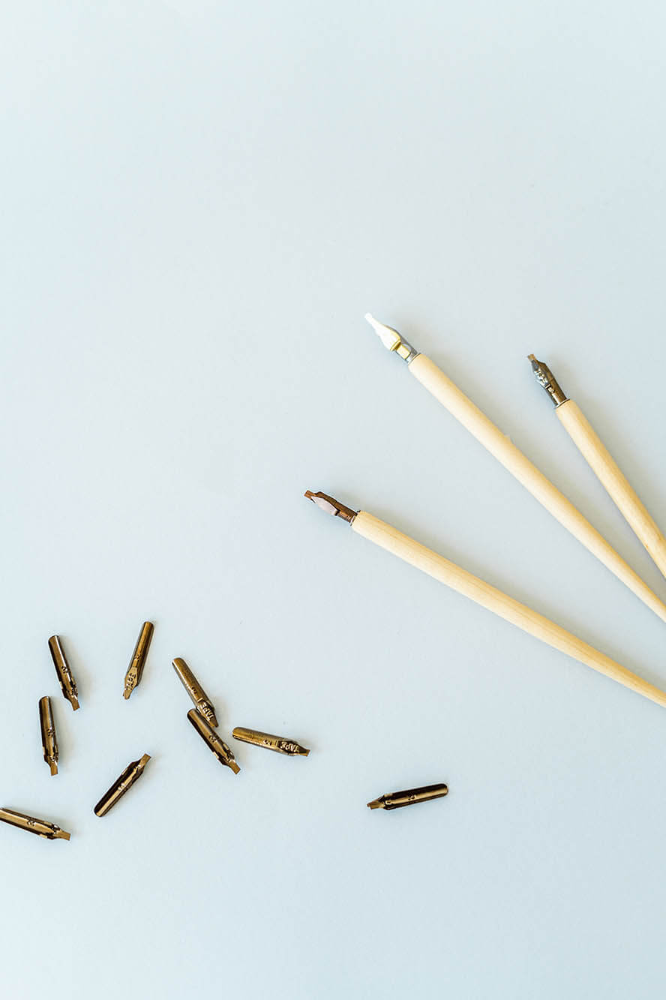

Металлические перья с держателем, можно заменить специальными маркерами с широким кончиком или брашпенами (маркер-кисть). Но освоение классической каллиграфии правильнее начинать именно с металлических перьев. Для начала вам подойдет офисная бумага плотностью около 80 г/м2 (не Svetocopy, на этой бумаге тушь будет расплываться). Для итоговых работ необходима более плотная бумага — от 120 г/м2. Бумага не должна быть глянцевой или мелованной, чтобы хорошо впитывать тушь. Карандаш, линейка и транспортир понадобятся для разметки каллиграфического листа. Можно обойтись и без них, напечатав готовую сетку на листе. Для этого можно воспользоваться
